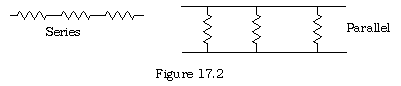
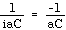
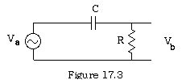
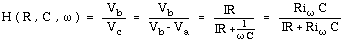

<HTML><HEAD><TITLE>17.4 Electrical Circuits and Complex Numbers</TITLE>

<meta NAME="description" CONENT="Modula-2 shareware textbook by Rick Sutcliffe; Electrical Circuits and Complex Numbers">
<META NAME="Author" content="Rick Sutcliffe">
<META NAME="Copyright" content="1983-2004 Rick Sutcliffe">
<STYLE TYPE="text/css"></STYLE>
<LINK REL ="stylesheet" TYPE="text/css" HREF="../linkstyles.css" TITLE="Style">
<LINK REL ="stylesheet" TYPE="text/css" HREF="../stylesheet.css" TITLE="Style">

</HEAD>
<BODY BGCOLOR="#CCFFFF">
<SCRIPT LANGUAGE="JavaScript1.1">
<!--
function framesGO() {
// figures out the path to one directory above this document
// (where the MAIN index.html is) and puts it into theString:

theString=document.URL
theString=theString.substring(0,theString.lastIndexOf("/",theString.length - 14))
parent.window.location = theString + "/index.html?" + document.URL
}

// if this is the top frame, we'll create a link to activate some
// JavaScript to set up the frames around this document.  For more
// documentation, look at the comments in the source of the top frame
// (numberstr.html in this directory - not numberstr1.html).

if ((parent.frames.length) == 0)
{
document.write('<CENTER><A HREF=\"javascript:framesGO()\">Show outer (navigation) frames</A></CENTER><HR>')
}
else
{
if (navigator.appVersion.substring(0,1) == 3 && navigator.appName.lastIndexOf('Netscape') != -1)
{
parent.frames[0].location.replace('numberstr1.html')
// For some reason netscape 3 gets confused when it tries to run the cool JavaScript
// stuff in numberstr.html and continue to load this frame at the same time. >:-(
// So, we'll load the boring numberstr1.html instead.
}
else
{
parent.frames[0].location.replace('numberstr.html')
}
}
//-->
</SCRIPT>
<H2><B>17.4 Electrical Circuits and Complex Numbers</B></H2>
<P>In a direct current circuit, the Voltage (E) current (I) and resistance (R) are related by  a simple formula called Ohms Law:</P>

<P>E = IR</P>

<P>where E is measured in Volts, I in Amperes, and R in ohms.  Computations involving the three quantities are  straightforward.</P>
<P>It turns out that resistances in series are additive, R = R<SUB>1</SUB> + R<SUB>2</SUB> + R<SUB>3</SUB> + ...</P>
<CENTER></CENTER><!--
-->
<P>whereas those in parallel add in inverses 1/R = 1/R1 + 1/R2 + 1/R3 + ...</P>
<P>When one considers alternating current, the situation becomes more complex.  Here, the voltage and current are not constant, but expressed as a sinusoidal wave over time.</P>
<P>E(t) =  E<SUB>0</SUB> cos(<!--w-->t+<!--q-->) </P>
<P>and likewise for I</P>
<P>(t) = I<SUB>0</SUB> cos(<!--w-->t+<!--f-->&#248;).</P>
<P>Using Euler's law, (e<SUP>i<!--q--></SUP>= cos<!--q--> + i sin<!--q-->) these can be expressed as E(t) =  E<SUB>0</SUB> e<SUP>i(wt+<!--q-->) </SUP>and I (t) = I<SUB>0</SUB> e<SUP>i(<!--w-->t<!--f-->&#248;)</SUP> where i is, as usual, .</P>
<P>The time dependent resistance of the circuit, (called the impedance and denoted Z), is affected by resistance and by two other types of components<!--‹-->-capacitors and inductance coils.  Denoting the three by Z<sub>R</sub>, Z<sub>L</sub>, and Z<sub>C</sub> for impedence due to resistors, capacitors, and impedence respectively, it can be shown that:</P>

<P>Z<SUB>R</SUB> = R</P>
<P>Z<SUB>L</SUB> = i<!--w-->L  where L is the inductance in Henries</P>
<P>Z<SUB>C</SUB> = <!----> where C is the capacitance in Farads.</P>

<P>These impedances add in series and parallel in the same way as do resistances.</P>
<P>In general, such quantities have both a real part (still called the resistance) and an imaginary part (called the reactance).</P>
<P>Of course, the magnitude |Z| of an impedance Z = Z<SUB>0</SUB> e<SUP>i<!--q--></SUP> is abs (Z) and the phase angle <!--q--> is arg (Z).  The effect of an RCL circuit is to filter the current and pass an altered current whose amplitude is reduced by a factor of |Z| compared to the original and whose phase is shifted by a quantity equal to the phase angle of Z.</P>
<P>An interesting property of circuits that have combinations of these three elements is called the transfer function.  It is the ratio of the output voltage to the input voltage.  Consider the RC circuit in <a name="figure 17.3">figure 17.3 </a>for instance.</P>

<P><CENTER></CENTER><!----></P>

<P>Considering the ratio of the output voltage V<SUB>b</SUB> to the input voltage V<SUB>a</SUB>, and denoting the voltage drop at the capacitor by V<SUB>c</SUB>, one has for this circuit the transfer function <B>H</B> given by:</P>

<P><!----></P>
<P>The magnitude of this result is the magnitude of the resulting voltage function, and the phase angle of the result is the shift in phase from the input voltage, which for purposes of making the calculation simple is assumed not to have been shifted at the start.  The units of the frequency <!--w--> are radians per second.  This particular computation has been encapsulated as follows:</P>

<pre><B>DEFINITION</B> <B>MODULE</B> TransferFunctions;

(* This module contains one or more procedures to compute the
transfer function or ratio of output voltage to input voltage
as a complex quantity.  The magnitude of the result is the amplitude of the 
resulting sinusoidal vave, and the phase angle is the phase shift
from the starting phase angle.  Each procedure takes parameters
for the resistance, capacitance, and/or inductance of the circuit,
and frequency of the input wave.  *)

<B>PROCEDURE</B> RCTransfer (res, cap, freq : <B>REAL</B>) : <B>COMPLEX</B>;
(* computes the transfer function for the RC circuit
--------|| ----------------
|                |
|                |
~ input          R        output
|                |
|                |
---------------------------
*)
<B>END</B> TransferFunctions.

<B>IMPLEMENTATION</B> <B>MODULE</B> TransferFunctions;

<B>FROM</B> ComplexMath <B>IMPORT</B>
  one, i;
 
<B>PROCEDURE</B> RCTransfer (res, cap, freq : <B>REAL</B>) : <B>COMPLEX</B>;

<B>VAR</B>
  temp: <B>REAL</B>;
<B>BEGIN</B>
  temp := freq * res * cap;
  <B>RETURN</B> (<B>CMPLX</B> (temp, 0.0)  * i) / (one + <B>CMPLX</B> (temp, 0.0) * i);
<B>END</B> RCTransfer;

<B>END</B> TransferFunctions.
</pre>
<P>The imports <I>one</I> and <I>i</I> are the complex quantities 1 + 0i, and 0 + i, respectively.  Here, the built in function CMPLX is employed to convert a pair of reals (a, b) to the complex quantity a + bi.  One may also begin with a complex number and fetch the real and imaginary parts using:</P>

<pre>re := <B>RE</B> (z);
im := <B>IM</B> (z);</pre>

<P>where re and im are both of type REAL and z is of type COMPLEX.  RE and IM are standard identifiers.</P>
<P>What follows is a simple module to test this transfer function.  It calls for the resistance and capacitance of the RC circuit and a range of frequencies over which to compute the transfer function, then translates this into an amplitude and phase shift for the output wave and prints a little table.</P>

<pre><B>MODULE</B> TestTransferFunctions;
(* Module to test transfer functions and
   illustrate the use of complex numbers
   by R. Sutcliffe
   modified 1996 01 12  *)
 
<B>FROM</B> STextIO <B>IMPORT</B>
  WriteString, WriteLn, SkipLine;

<B>FROM</B> SRealIO <B>IMPORT</B>
  ReadReal, WriteFixed;
  
<B>FROM</B> ComplexMath <B>IMPORT</B>
  zero, abs, arg;
  
<B>FROM</B> TransferFunctions <B>IMPORT</B>
  RCTransfer;
  
<B>VAR</B>
  count : <B>CARDINAL</B>;
  resistance, capacitance,
  frequency, startFreq, endFreq, amplitude, phaseShift :<B>REAL</B>;
  transFactor : <B>COMPLEX</B>;
  
<B>CONST</B> 
  step = 10.0;
  
<B>BEGIN</B>
  WriteString ("This program determines the magnitude and phase effects ");
  WriteLn;
  WriteString ("of an RC circuit over an interval of frequencies ");
  WriteLn;
  WriteString ("entered by the user.");
  WriteLn;WriteLn;
  WriteString ("Enter the resistance in ohms ");
  ReadReal (resistance);
  SkipLine;
  WriteString ("Enter the capacitance in farads ");
  ReadReal (capacitance);
  SkipLine;
  WriteString ("Enter the starting frequency in radians per second ");
  ReadReal (startFreq);
  SkipLine;
  WriteString ("Enter the ending frequency in radians per second ");
  ReadReal (endFreq);
  SkipLine;
  
  frequency := startFreq;
  WriteString ("Frequency    Magnitude     Phase Shift");
  WriteLn;
  <B>WHILE</B> frequency <!--<-->&lt;= endFreq
    <B>DO</B>
      transFactor := RCTransfer (resistance, capacitance, frequency);
      amplitude := abs (transFactor);
      <B>IF</B> transFactor = zero  (* can't feed to arg or get exception *)
        <B>THEN</B>
        phaseShift := 0.0
      <B>ELSE</B>
        phaseShift := arg (transFactor);
      <B>END</B>;
      WriteFixed (frequency, 2, 10);
      WriteFixed (amplitude, 2, 10);
      WriteFixed (phaseShift, 2, 10);
      WriteLn;
      frequency := frequency + step
    <B>END</B>;
  WriteLn;
  WriteString ("Press a key to continue");
  SkipLine;
<B>END</B> TestTransferFunctions.
</pre>
<P>Like the constants <I>zero</I>, <I>one</I>, and <I>i</I>, the functions <I>abs</I> and <I>arg</I> are imported from the separate module <I>ComplexMath</I>.  <I>abs</I> returns the magnitude of the complex number, and <I>arg</I> returns the angle it makes with the real axis.  Runs of this test are printed below:</P>

<pre>** Run log starts here **
This program determines the magnitude and phase effects 
of an RC circuit over an interval of frequencies 
entered by the user.

Enter the resistance in ohms 10000
Enter the capacitance in farads .000002
Enter the starting frequency in radians per second 0
Enter the ending frequency in radians per second 200
Frequency    Magnitude     Phase Shift
       0.0       0.0       0.0
     10.00      0.20      1.37
     20.00      0.37      1.19
     30.00      0.51      1.03
     40.00      0.62      0.90
     50.00      0.71      0.79
     60.00      0.77      0.69
     70.00      0.81      0.62
     80.00      0.85      0.56
     90.00      0.87      0.51
    100.00      0.89      0.46
    110.00      0.91      0.43
    120.00      0.92      0.39
    130.00      0.93      0.37
    140.00      0.94      0.34
    150.00      0.95      0.32
    160.00      0.95      0.30
    170.00      0.96      0.29
    180.00      0.96      0.27
    190.00      0.97      0.26
    200.00      0.97      0.24

Press a key to continue

** Run log starts here **
This program determines the magnitude and phase effects 
of an RC circuit over an interval of frequencies 
entered by the user.

Enter the resistance in ohms 100
Enter the capacitance in farads .000002
Enter the starting frequency in radians per second 0
Enter the ending frequency in radians per second 200
Frequency    Magnitude     Phase Shift
       0.0       0.0       0.0
     10.00      0.00      1.57
     20.00      0.00      1.57
     30.00      0.01      1.56
     40.00      0.01      1.56
     50.00      0.01      1.56
     60.00      0.01      1.56
     70.00      0.01      1.56
     80.00      0.02      1.55
     90.00      0.02      1.55
    100.00      0.02      1.55
    110.00      0.02      1.55
    120.00      0.02      1.55
    130.00      0.03      1.54
    140.00      0.03      1.54
    150.00      0.03      1.54
    160.00      0.03      1.54
    170.00      0.03      1.54
    180.00      0.04      1.53
    190.00      0.04      1.53
    200.00      0.04      1.53

Press a key to continue

** Run log starts here **
This program determines the magnitude and phase effects 
of an RC circuit over an interval of frequencies 
entered by the user.

Enter the resistance in ohms 30000
Enter the capacitance in farads .000002
Enter the starting frequency in radians per second 0
Enter the ending frequency in radians per second 200
Frequency    Magnitude     Phase Shift
       0.0       0.0       0.0
     10.00      0.51      1.03
     20.00      0.77      0.69
     30.00      0.87      0.51
     40.00      0.92      0.39
     50.00      0.95      0.32
     60.00      0.96      0.27
     70.00      0.97      0.23
     80.00      0.98      0.21
     90.00      0.98      0.18
    100.00      0.99      0.17
    110.00      0.99      0.15
    120.00      0.99      0.14
    130.00      0.99      0.13
    140.00      0.99      0.12
    150.00      0.99      0.11
    160.00      0.99      0.10
    170.00      1.00      0.10
    180.00      1.00      0.09
    190.00      1.00      0.09
    200.00      1.00      0.08

Press a key to continue
</pre>
<P>The first run (R = 10000<!--‡--> and C = .000002F) has low frequency currents scarcely making it through the circuit, whereas the higher frequency one are passed almost without distortion.  When the resistance is lowered, the lower frequencies are almost entirely cut off, and the phase shift is large.  When R is increased to 30000<!--‡-->, the effect is present only for the very lowest frequencies.  Such circuits (usually with several more elements) are often called <I>filters</I> because of these effects. Numerous other combinations of the resistance, inductance and capacitance are possible in such circuits, and each has its own transfer function.</P>
<HR>
<CENTER><A HREF="../contents.html" TARGET="big_right">Contents</A>
</CENTER>
</BODY>
</HTML>